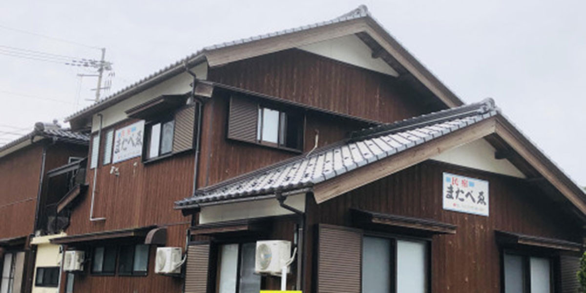
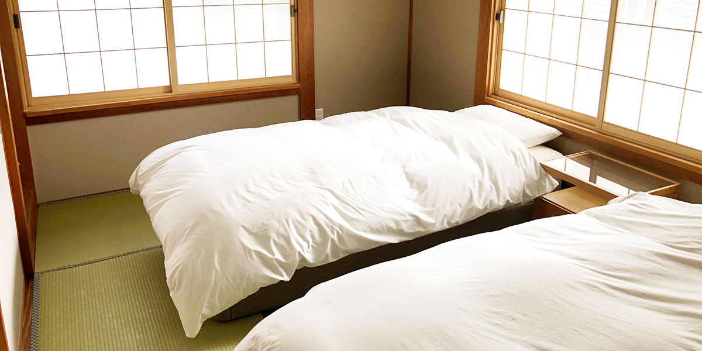

Cuisine お料理
女将が朝、漁港で競り落とした活魚と、自家製の「へしこ」が、又兵衛の味の中心です。

女将自家製へしこ
美浜特産「へしこ」。刺身、お茶漬け、パスタなど様々な調理法でご提供。

季節の地魚
姿造り、刺身、煮付けなど、若狭の海の恵みをお楽しみください。
季節の料理カレンダー
| 11月〜3月 | 若狭ふぐ・かに料理 |
|---|---|
| 11月〜2月 | ぶりしゃぶ（5名様より） |
| 夏 | 甘鯛のしゃぶしゃぶがおすすめ |
福井県美浜町・日向湖の畔に、ぽつりと佇む小さな宿。
創業は昭和48年、女将が一人ひとりに声をかけ、地のものを料理する、5部屋だけの家族経営の民宿です。
「一度行ったらまた行きたくなる宿」を合言葉に、半世紀あまり、漁師町の暮らしと旅の方をつないできました。

女将が朝、漁港で競り落とした活魚と、自家製の「へしこ」が、又兵衛の味の中心です。
美浜特産「へしこ」。刺身、お茶漬け、パスタなど様々な調理法でご提供。
姿造り、刺身、煮付けなど、若狭の海の恵みをお楽しみください。
| 11月〜3月 | 若狭ふぐ・かに料理 |
|---|---|
| 11月〜2月 | ぶりしゃぶ（5名様より） |
| 夏 | 甘鯛のしゃぶしゃぶがおすすめ |

又兵衛の前に広がる日向湖は、筏釣り発祥の地。
わかさいくる認定／2023年9月29日
福井県嶺南地域のサイクリスト向け宿として、設備・サービスの基準をクリアした宿だけが認定されます。

三方五湖一周「ゴコイチ」（33km）の拠点として最適。
湖のそばを走る爽快感、高低差ほぼなし。初心者の方も安心してお楽しみいただけます。
若狭路センチュリーライド（毎年5月開催）の前後泊にもご利用ください。スタート地点までもアクセス良好です。

料金は明朗会計。すべて税込表示です。
¥5,500
お食事なし。釣り客・サイクリストの方に。
¥6,600
朝食はおにぎりへの変更も可能（早朝出発の方向け）。
¥13,200〜
女将が選ぶ地魚の姿造り。季節料理（ふぐ・かに・甘鯛）はご相談ください。
チェックイン 15:00 ／ チェックアウト 10:00
キャンセル料 当日 100%／前日 70%／3日前から 30%
※ ご予約はお電話のみ承っております。
〒919-1112
福井県三方郡美浜町日向47-51
TEL 0770-32-0461
FAX 0770-37-1033